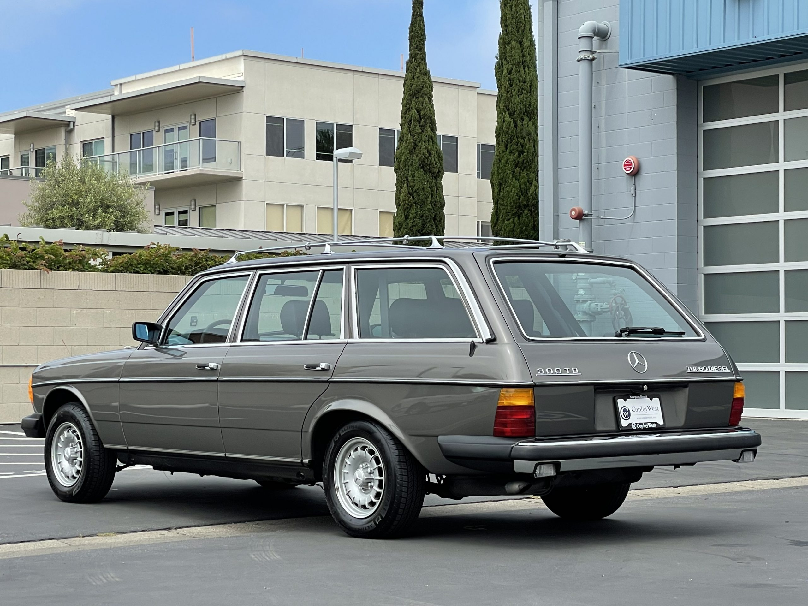
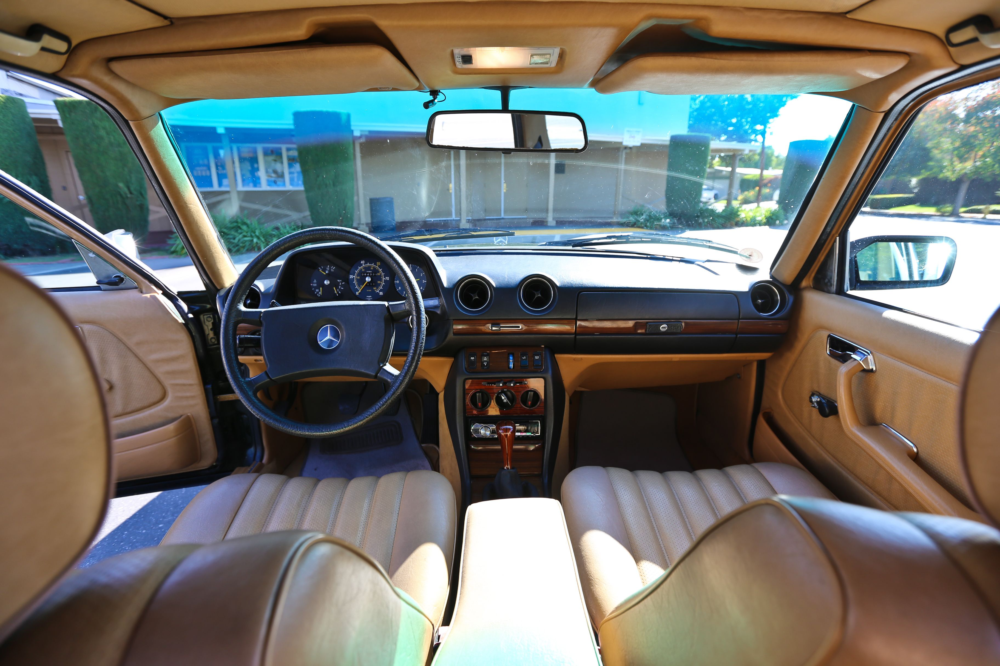
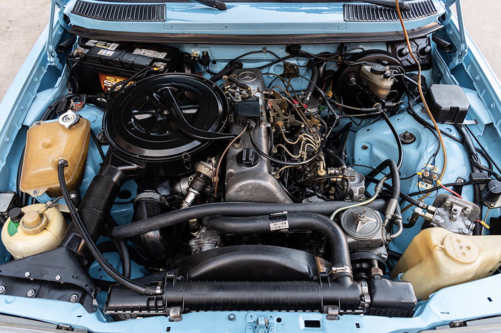
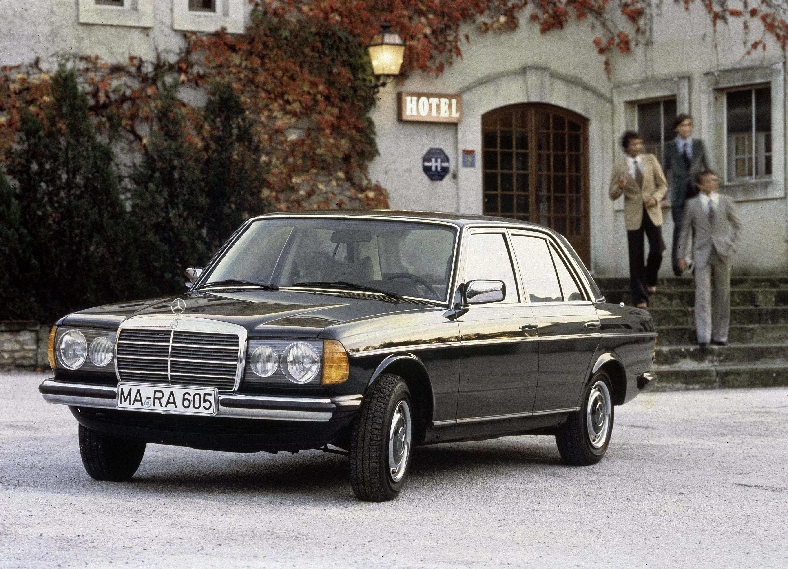
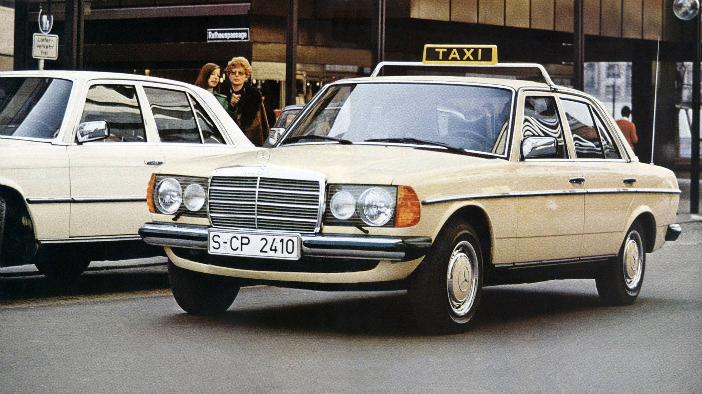

The W123 was the car that cemented Mercedes-Benz as the maker of some of the most durable and well-engineered automobiles in the world. Introduced in the mid-1970s, it was built with a level of precision and quality that felt almost excessive, each detail carefully considered to ensure longevity and reliability. Its design was timeless—understated yet elegant, modern yet instantly recognizable as a Mercedes-Benz. It carried an air of quiet confidence, a car that did not need to shout about its capabilities because they spoke for themselves. From city streets to remote villages, it proved itself as a machine that could endure anything, effortlessly bridging the gap between luxury and utility.
The W123 became more than just a car; it became a trusted companion to millions of drivers around the world. Owners came to appreciate not just its durability but also the sense of solidity and reassurance it provided. Its interior, built with lasting materials and impeccable craftsmanship, was a place of comfort and control, with a simplicity that has aged gracefully. It was a car that asked little of its owner but gave back endlessly in reliability and peace of mind. Decades later, its legacy remains undeniable, a symbol of an era when cars were designed to last a lifetime rather than just a few years.
The W123 was offered in a variety of body styles and engine configurations, each catering to a different type of buyer while maintaining the model’s core values of durability and refinement. The sedan was the most common, followed closely by the practical and well-loved estate (T-model), which set the standard for premium station wagons. For those seeking a more elegant approach, the coupe variant provided the same solid engineering in a sleeker, pillarless design. While gasoline engines ranged from smooth inline-fours and sixes to the rare, more powerful 280E, it was the diesel models that truly defined the W123’s reputation for longevity. Available in configurations from the simple 200D to the more powerful five-cylinder 300D, these engines were known for their unrelenting reliability and efficiency, making them the preferred choice for taxi fleets across the world. Even today, high-mileage examples with well over half a million kilometers are not uncommon, a testament to their overbuilt nature.
When searching for a W123 today, mechanical durability is often less of a concern than the condition of the bodywork. While the engines, especially the diesels, can seemingly run forever with basic maintenance, rust is the biggest enemy of these cars. Areas such as the wheel arches, sills, and floor pans should be carefully inspected. Additionally, worn suspension components can lead to a floaty, imprecise ride, though replacements are widely available. Interior materials were built to last, but sun damage and seat wear are common on high-mileage examples. The later models, particularly those from the final years of production, tend to have the most refinements and are often the best choice for buyers looking for a W123 that feels the most modern. Despite their age, a well-kept W123 remains an incredibly usable classic, blending old-world craftsmanship with a level of dependability that few cars of any era can match.
 